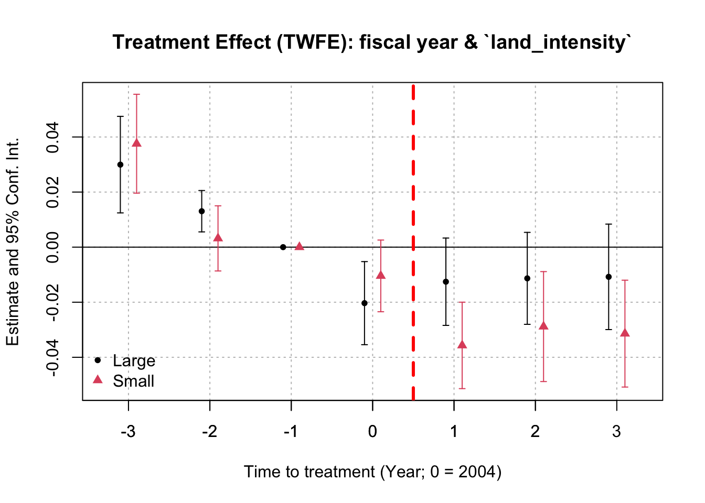
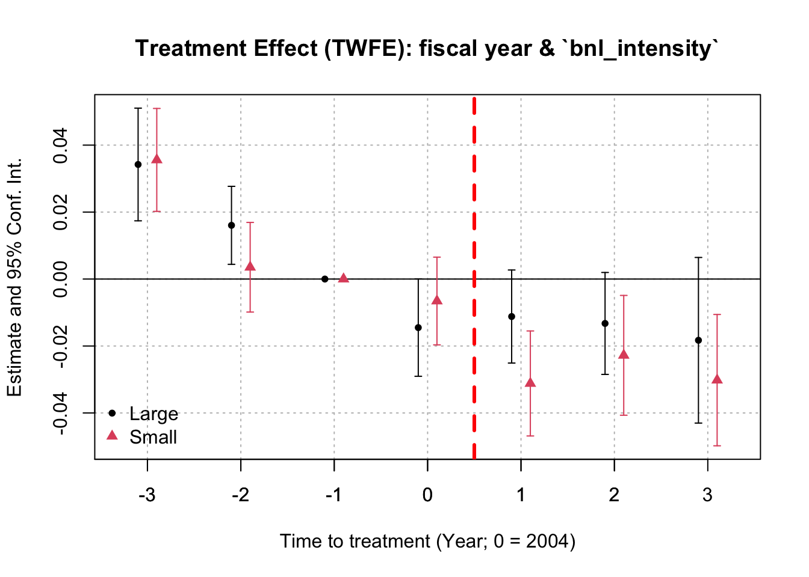

Empirical support from 2005 Reform with the North America sample
Author
Hongyi Xu
Published
March 3, 2025
Modified
March 11, 2025
This analysis is suggested by discussant Samuel Antill in 2025 AFA meeting.
The previous version can be found here. In this updated document, we use a new measure to more accurately pinpoint the impact of non-residential real property lease contracts they have.
In this version, we replace the measure contract_intensity by ppe_lease_intensity et al. and re-run all tests.
Updates: Mar 11, 2025
In this version, we set the base_year == 2004 instead of 2005. Based on the S.256 - Bankruptcy Abuse Prevention and Consumer Protection Act of 2005, the bill was first introduced on February 1, 2025 and was signed into law by President George W. Bush. on April 20, 2005. The act’s provisions applied to bankruptcy cases filed on or after October 17, 2005. > Wikipedia
Therefore, the treatment effects should be present at first in the annual reports for the fiscal year 2005 and the treatment happens in fiscal year 2004.
Note 1: To-Do List - Mar 5, 2025
S1. Download and Load the Raw Dataset
We download the firm-level capital structure = from Compustat-CapitalIQ North America. The first measure of executory contracts is accounting data which (under U.S. GAAP) cover leases and rental contracts. We use the variables “Debt Equivalent of Operating Leases”, “Capital Leases” and “Net Rental Expenses”.
Debt - Capitalized Lease Obligations (dclo): This item represents long-term obligations due in respect of lease finances and hire purchase arrangements. This item includes:
Long-term finance lease obligations
Long-term lease financing
Long-term hire purchase obligations
Non-current obligations under capital leases
Rental Expense (xrent): This item represents all costs charged to operations for rental, lease, or hire of space and/or equipment. This item includes:
Airlines’ landing fees
Contingent rentals associated with capitalized leases
Lease charges and plant hire
In the main test, we construct a new variable called total rent, which is defined as the total rental commitment mrc1 + mrc2 + mrc3 + mrc4 + mrc5 + mrct reported in year t.
Asset - Total (at): Book value of total assets.
Debt in Current Liabilities - Total (dlc) is for the short-term debt and Long-term debt - Total (dltt) is for the long-term debt.
Earnings Before Interest (EBITDA): EBITDA.
Industry classifications: naics, sic and spcindcd + (Fama-French 30 Industry Classifiers, To Be Added / Definition).
In this section we add a new variable:
Note
Updated: March 5, 2025
Property, Plant, and Equipment - Leases at Cost (fatl) is the capitalized value of leases and leasehold improvements included in property, plant, and equipment, excluding equipment leased to others, and is not applicable to banks or utilities. > Definition
Property, Plant, and Equipment - Buildings at Cost (fatb). > Definition
Property, Plant, and Equipment - Land and Improvements at Cost (fatp).
Property, Plant, and Equipment - Buildings (Net) (ppenb).
Property, Plant, and Equipment - Land and Improvements (Net) (ppenli).
Property, Plant and Equipment - Total (Gross) (ppegt).
Property, Plant and Equipment - Total (Net) (ppent)
Loans/Claims/Advances - Lease (lcal). > Defintion > This might be the more promising variable.
Note 2: All North American firms Now!
We download all annual observations with Data Date (datadate) between Jan 2000 and Dec 2007 and restrict to firms either incorporated or having headquarters in US (i.e. fic == "USA" | loc == "USA").
This filter does not apply to the current version of the analysis.
Given that the policy shock happens under the US jurisdiction, we expect more significant treatment effect to be detected in this sample. The period used in Samuel’s slides is between 2002 and 2007, which is after the doc.com bubble and before the GFC. The variables in the dataset are:
Show the code
## create the data file path data_file <-"jpbdsuonrpztpw8t.csv"data_path <-file.path(work_dir, "Data", data_file)## load the compustat_na datacompustat_na <-as_tibble(read.csv(file = data_path) ) # %>%# filter(fic == "USA" | loc == "USA" ) ## keep only US related observations (| fic == "CAN" | loc == "CAN")## data file record: # | Mar 10, 2025 > jpbdsuonrpztpw8t.csv# | Mar 9, 2025 > nfmss2xkmjgfjonh.csv # | Mar 5, 2025 > e3cdfjocaz4aboqh.csv # | Mar 3, 2025(2) > tbrl8c4xqurukptl.csv > more variables # | Mar 3, 2025(1) > evvvij0nqoe8sshv.csv# | Feb 24, 2025 > azsyeo1yjmrb2q1v.csv # | Jan 14, 2025 > g4f68dkn3beu1iag.csv ## load the FF_30ind data FF_30ind <-as_tibble(read.csv(file =file.path(work_dir, "Data", "ff_30ind.csv")))## check the variable names cat("Variables include:\n\n")sort(names(compustat_na)) cat("\nSample size: \n\n")dim(compustat_na)
Two dependent variables are constructed to measure firm’s leverage: (cf. p18 and Table 2 of the paper)
Book leverage: we define leverage as the ratio of the sum of short-term debt and long-term debt to assets (we drop observations where this is outside the [0,1] range)*.
Debt/EBITDA: we define debt-to-EBITDA as the ratio of the long- and short-term debt to EBITDA (we drop observations where this is outside the [0,15] range)*.
These restrictions are now imposed in all analyses in Section 3.
Note 3
Show the code
## set the base year base_year <-2004period_start <-2002period_end <-2007intensity_measure_year <-2000# choose the base year for the intensity measure n_pre <-1# number of periods before the period_start in the iplot() ## create leverage variables data <- compustat_na %>%# filter(at >= 0) %>%filter(indfmt =="INDL") %>%## remove all financial firms## create the lagged `ppent` item: group_by(gvkey) %>%arrange(fyear) %>%mutate(ppent_lag1 =lag(ppent, n =1)) %>%ungroup() %>%## create new variables: mutate(## leverage variables: book_leverage = (dlc + dltt) / at, debt_ebitda = (dlc + dltt) / ebitda, ## treatment intensity: totalrent =coalesce(mrc1, 0) +coalesce(mrc2, 0) +coalesce(mrc3, 0) +coalesce(mrc4, 0) +coalesce(mrc5, 0) +coalesce(mrcta, 0), # total rent w/o discount# contract_intensity = (dclo + xrent * 3) / at, # executory contract intensitycontract_intensity = (coalesce(dclo, 0) + totalrent) / at, # executory contract intensity### for the total: ppe_lease_intensity = fatl / at, # PPE lease intensity building_intensity = fatb / at, # only for buildings (i.e. properties), but only not only leased onesland_intensity = fatp / at, # only land intensity bnl_intensity = building_intensity + land_intensity, ### for the net: # net_lease_intensity = ppenls / at, # net PPE lease intensity [not available after 1998]# net_building_intensity = ppenb / at, # net PPE building intensity [not available after 1998] net_land_intensity = ppenli / at, # net PPE land intensity ### for total PPE: net_PPE_intensity = ppent / at, # net PPE intensity PPE_intensity = ppegt / at, # gross PPE intensity ### for lessors: lessor_lease_intensity = lcal / at, # this is outstanding lease intensity to be received. ## other variables and controls: dyear =as.integer(substr(datadate, start =1, stop =4)), # data year roa = ni / at, # return on asset (ROA) tangibility = ppent / at, # tangibility altman_Z = (3.3* revt +1.4* re +1.2* wcap) / at, # Altman Z-scorekz =-1.001909* ((ib + dp)/ppent_lag1) +0.2826389* ((at + prcc_f*csho - ceq - txdb)/at) +3.139193* ((dltt + dlc)/(dltt + dlc + seq)) -39.3678* ((dvc + dvp)/ppent_lag1) -1.314759* (che/ppent_lag1), # KZ index # hw = , # financial contraints (HW) current_ratio = act / lct, # current ratio: current asset / current liabilites market_book = (prcc_f*csho) / (ceq + txdb) # market-to-book ) ## record the variable names cat("Variables Created:\n\n")sort(setdiff(names(data), names(compustat_na)))
We propose two noisy measures of the PPE lease contract intensity.
ppe_lease_intensity: calculated as the Property, Plant, and Equipment - Leases at Cost (fatl) normalized by the total asset for firm i at year t. It measures the future lease obligations in PPE, but it is a noisy measure as it also includes equipment.
building_intensity: calculated as Property, Plant, and Equipment - Buildings at Cost (fatb) normalized by the total asset for firm i at year t.
oustanding_lease_intensity: calculated as the Loans/Claims/Advances - Lease (lcal) normalized by the total asset for firm i at year t. It measures the amount of lease obgliations to be collected by firm i in the future. You can view this sample as the lessor in the lease contract, while the previous variable, ppe_lease_intensity, captures the sample of lessees.
Although this will contain other items besides non-residential real property lease obligations, we believe that it is a potentially better measure for a firm’s exposure to this policy shock in 2005.
For definitions of controls, please refer to Section 4.
Then, we construct the dataset for the difference-in-difference analysis.
In this section, we use all observations without missing values in subsequent analyses.
The original dataset (data) contains observations with fiscal year (fyear) range in [1996, 2009] and we restrict the sample to the data year in [2002, 2007].
The fiscal year fyear will be chosen as the time index for the following analyses using different lease contract intensity measures.
Note 4: Sensitivity of the choice of the base year
s3.0. Executory contract intensity
contract_intensity is chosen to measure a firm’s executory contract intensity, which was expected to be impacted by the change in the bankruptcy code in 2005.
Show the code
## choose the group definition: intensity_measure_name <-c("contract_intensity", "ppe_lease_intensity", "building_intensity", "land_intensity","bnl_intensity")[1]data_firm <- data %>%filter(fyear == intensity_measure_year) %>%# use `fyear` may create multiple observations for the same firm. E.g. filter(gvkey == 23535, dyear == 2005) group_by(fyear) %>%## identify large and small firms based on its total asset in the year 2000 mutate(median_at =median(at, na.rm =TRUE)) %>%ungroup() %>%mutate(large =ifelse(at > median_at, 1, 0)) %>%select(gvkey, intensity_2000 =all_of(intensity_measure_name), large) data_did <- data %>%## merge the grouping variable left_join(y = data_firm, by =join_by(gvkey) ) %>%## merge the FF 30 industry classifiaction left_join(y = FF_30ind, by =join_by(sic)) %>%## exclude certain industries filter( ff_30ind !=20, # exclude Utiltiy (number 20) !(sic >=6000& sic <=6199) # exclude banks under Banking, Insurance, Real Estate, Trading (number 29) ) %>%## pre- & post- mutate(indexyear = (fyear - base_year), # year index with 2005 as base 0.post_2005 =as.numeric(fyear > base_year) # whether it is after the 2005 reform ) ## gvkey(s) for balanced panel": data_did_balanced_id <- data_did %>%filter(book_leverage >=0& book_leverage <=1) %>%filter(fyear >= period_start - n_pre & fyear <= period_end) %>%group_by(gvkey) %>%summarise(count_obs =sum(!is.na(book_leverage) &!is.na(intensity_2000))) %>%ungroup() %>%filter(count_obs == period_end - period_start +1+ n_pre) %>% .$gvkey data_intensity_panel <- data %>%filter(fyear <2007) %>%select(gvkey, fyear, all_of(intensity_measure_name)) %>%pivot_wider(names_from = fyear, values_from =all_of(intensity_measure_name))data_intensity_panel %>% .[,-1] %>%apply(MARGIN =1, FUN =function(x) {# sd(x = unlist(x[1:7]), na.rm = TRUE)c(intensity_sd =sd(x =unlist(x), na.rm =TRUE), intensity_cv =sd(x =unlist(x), na.rm =TRUE)/mean(unlist(x), na.rm =TRUE) ) }) %>%t() %>%cbind.data.frame(data_intensity_panel, .) %>%as_tibble() %>%select(gvkey, intensity_sd, intensity_cv, intensity_2000 ='2000') %>%lm(intensity_2000 ~ intensity_sd + intensity_cv, data = .) %>%summary()
Call:
lm(formula = intensity_2000 ~ intensity_sd + intensity_cv, data = .)
Residuals:
Min 1Q Median 3Q Max
-60.296 -0.160 -0.131 -0.047 221.314
Coefficients:
Estimate Std. Error t value Pr(>|t|)
(Intercept) 0.181344 0.049821 3.640 0.000274 ***
intensity_sd 0.198606 0.006554 30.302 < 2e-16 ***
intensity_cv -0.013677 0.051092 -0.268 0.788942
---
Signif. codes: 0 '***' 0.001 '**' 0.01 '*' 0.05 '.' 0.1 ' ' 1
Residual standard error: 2.836 on 9303 degrees of freedom
(9997 observations deleted due to missingness)
Multiple R-squared: 0.09014, Adjusted R-squared: 0.08994
F-statistic: 460.8 on 2 and 9303 DF, p-value: < 2.2e-16
I re-construct a measure for the standard deviation of a firm’s intensity measure over time and name it intensity_var. A simple linear regression between the intensity measure in 2000 and its standard deviation shows a positive correlation between the two. It seems that this measure is more volatile when the intensity is high.
The positive relationship persists if we use the coefficient of variation (CV = sd / mean), which measures the relative variability, as the independent variable.
DiD Analysis:
Variable treated is defined as whether the firm has a positive contract_intensity in year rintensity_measure_year`.
ppe_lease_intensity is chosen to measure a firm’s long-term exposure to lease contracts, especially non-residential real property lease obligations, which was expected to be impacted by the change in the bankruptcy code in 2005.
Show the code
## choose the group definition: intensity_measure_name <-c("contract_intensity", "ppe_lease_intensity", "building_intensity", "land_intensity","bnl_intensity")[2]data_firm <- data %>%filter(fyear == intensity_measure_year) %>%# use `fyear` may create multiple observations for the same firm. E.g. filter(gvkey == 23535, dyear == 2005) group_by(fyear) %>%mutate(median_at =median(at, na.rm =TRUE)) %>%ungroup() %>%mutate(large =ifelse(at > median_at, 1, 0)) %>%select(gvkey, intensity_2000 =all_of(intensity_measure_name), large) data_did <- data %>%## merge the grouping variable left_join(y = data_firm, by =join_by(gvkey) ) %>%## merge the FF 30 industry classifiaction left_join(y = FF_30ind, by =join_by(sic)) %>%## exclude certain industries filter( ff_30ind !=20, # exclude Utiltiy (number 20) !(sic >=6000& sic <=6199) # exclude banks under Banking, Insurance, Real Estate, Trading (number 29) ) %>%## pre- & post- mutate(indexyear = (fyear - base_year), # year index with 2005 as base 0.post_2005 =as.numeric(fyear > base_year) # whether it is after the 2005 reform ) ## gvkey(s) for balanced panel": data_did_balanced_id <- data_did %>%filter(book_leverage >=0& book_leverage <=1) %>%filter(fyear >= period_start - n_pre & fyear <= period_end) %>%group_by(gvkey) %>%summarise(count_obs =sum(!is.na(book_leverage) &!is.na(intensity_2000))) %>%ungroup() %>%filter(count_obs == period_end - period_start +1+ n_pre) %>% .$gvkey data_intensity_panel <- data %>%filter(fyear <2007) %>%select(gvkey, fyear, all_of(intensity_measure_name)) %>%pivot_wider(names_from = fyear, values_from =all_of(intensity_measure_name))data_intensity_panel %>% .[,-1] %>%apply(MARGIN =1, FUN =function(x) {# sd(x = unlist(x[1:7]), na.rm = TRUE)c(intensity_sd =sd(x =unlist(x), na.rm =TRUE),intensity_cv =sd(x =unlist(x), na.rm =TRUE)/mean(unlist(x), na.rm =TRUE) ) }) %>%t() %>%cbind.data.frame(data_intensity_panel, .) %>%as_tibble() %>%select(gvkey, intensity_sd, intensity_cv, intensity_2000 ='2000') %>%lm(intensity_2000 ~ intensity_sd + intensity_cv, data = .) %>%summary()
Call:
lm(formula = intensity_2000 ~ intensity_sd + intensity_cv, data = .)
Residuals:
Min 1Q Median 3Q Max
-1.43054 -0.02519 -0.01069 0.01839 1.80266
Coefficients:
Estimate Std. Error t value Pr(>|t|)
(Intercept) 0.047995 0.002372 20.23 <2e-16 ***
intensity_sd 1.531545 0.014390 106.43 <2e-16 ***
intensity_cv -0.055780 0.002310 -24.14 <2e-16 ***
---
Signif. codes: 0 '***' 0.001 '**' 0.01 '*' 0.05 '.' 0.1 ' ' 1
Residual standard error: 0.09947 on 4888 degrees of freedom
(14412 observations deleted due to missingness)
Multiple R-squared: 0.704, Adjusted R-squared: 0.7039
F-statistic: 5814 on 2 and 4888 DF, p-value: < 2.2e-16
nn %>%iplot(., xlab =paste("Time to treatment (Year; 0 = ", base_year, ")", sep =""),main =paste("Treatment Effect (TWFE): fiscal year & `", intensity_measure_name, "`", sep =""), ref.line =FALSE,ref.line.par =list(col ="red", lty =2),pt.join =FALSE ); axis(1, at =-7:2); abline(v =0.5, col ="red", lty =2, lwd =3); legend('bottomleft', bty ="n", col =c(1, 2), pch =c(20, 17), legend =c('Large', 'Small'))

test the statistical difference between the treatement effect estimate across two samples:
Show the code
# Calculate the Wald statistics model_large <- nn$`sample.var: large; sample: Large`model_small <- nn$`sample.var: large; sample: Small`## get the name of the coefficnet of interests coef_names <-names(model_large$coefficients) %>% .[str_detect(string = ., pattern ="::")]coef_large <-coef(model_large)[coef_names]coef_small <-coef(model_small)[coef_names] # Difference in treatment effectsdiff_coef <- coef_large - coef_small# Variance of the differencevar_diff <-vcov(model_large)[coef_names, coef_names] +vcov(model_small)[coef_names, coef_names]# Wald statistic for each treatment effect estimate wald_stat <- (diff_coef)^2/diag(var_diff) # (t(diff_coef) %*% solve(var_diff) %*% (diff_coef))# Degrees of freedomdf <-1# P-valuep_value <-1-pchisq(wald_stat, df)convert_p_to_stars <-function(p_values) {# Initialize a character vector to store the significance stars stars <-character(length(p_values))# Assign stars based on p-value thresholds stars[p_values <0.001] <-"***" stars[p_values >=0.001& p_values <0.01] <-"**" stars[p_values >=0.01& p_values <0.05] <-"*" stars[p_values >=0.05& p_values <0.1] <-"." stars[p_values >=0.1] <-""return(stars)}# Output resultscat("Wald test for the difference in the treatment effect\n between the Large firms and Small firms: \n\n"); data.frame(Diff = diff_coef, `Std. Error`=sqrt(diag(var_diff)), `Wald stat`= wald_stat, `P value`= p_value, Star =convert_p_to_stars(p_value)) cat("Signif. codes: 0 '***' 0.001 '**' 0.01 '*' 0.05 '.' 0.1 ' ' 1 \n")
Wald test for the difference in the treatment effect
between the Large firms and Small firms:
Diff Std..Error Wald.stat P.value Star
indexyear::-3:treated -0.007598785 0.012802509 0.3522882 0.55282066
indexyear::-2:treated 0.009869943 0.007150296 1.9053786 0.16747752
indexyear::0:treated -0.009892381 0.010166007 0.9468930 0.33051142
indexyear::1:treated 0.023125249 0.011382467 4.1276229 0.04218857 *
indexyear::2:treated 0.017512363 0.013278817 1.7392848 0.18722947
indexyear::3:treated 0.020618901 0.013909916 2.1972628 0.13825604
Signif. codes: 0 '***' 0.001 '**' 0.01 '*' 0.05 '.' 0.1 ' ' 1
The wald test shows that the treatment effect between the large and small firms are indifferent before 2005 and significantly positive afterwards. In particular, after the policy shock in 2005, the large firms with positive land_intensity have higher book leverages relative to the small firms with positive land_intensity.
Since we expect that large firms are not affected by this treatment after 2005, even being in the treatment group, we can argue that small firms which receive an exogenous shock to the option value of their lease contracts will reduce their leverage.
s3.4. builindg and land intensity
bnl_intensity is chosen to measure a firm’s long-term exposure to builings, land and improvements at cost under the PPE.
Show the code
## choose the group definition: intensity_measure_name <-c("contract_intensity", "ppe_lease_intensity", "building_intensity", "land_intensity","bnl_intensity")[5]data_firm <- data %>%filter(fyear == intensity_measure_year) %>%# use `fyear` may create multiple observations for the same firm. E.g. filter(gvkey == 23535, dyear == 2005) group_by(fyear) %>%mutate(median_at =median(at, na.rm =TRUE), ) %>%ungroup() %>%mutate(large =ifelse(at > median_at, 1, 0)) %>%select(gvkey, intensity_2000 =all_of(intensity_measure_name), large) data_did <- data %>%## merge the grouping variable left_join(y = data_firm, by =join_by(gvkey) ) %>%## merge the FF 30 industry classifiaction left_join(y = FF_30ind, by =join_by(sic)) %>%## exclude certain industries filter( ff_30ind !=20, # exclude Utiltiy (number 20) !(sic >=6000& sic <=6199) # exclude banks under Banking, Insurance, Real Estate, Trading (number 29) ) %>%## pre- & post- mutate(indexyear = (fyear - base_year), # year index with 2005 as base 0.post_2005 =as.numeric(fyear > base_year) # whether it is after the 2005 reform ) ## gvkey(s) for balanced panel": data_did_balanced_id <- data_did %>%filter(book_leverage >=0& book_leverage <=1) %>%filter(fyear >= period_start - n_pre & fyear <= period_end) %>%group_by(gvkey) %>%summarise(count_obs =sum(!is.na(book_leverage) &!is.na(intensity_2000))) %>%ungroup() %>%filter(count_obs == period_end - period_start +1+ n_pre) %>% .$gvkey data_intensity_panel <- data %>%filter(fyear <2007) %>%select(gvkey, fyear, all_of(intensity_measure_name)) %>%pivot_wider(names_from = fyear, values_from =all_of(intensity_measure_name))
DiD Analysis:
In this part of the analysis, I also added the firm-year controls in the DiD and triple difference analyses. The first is called àt_thousand, which is the total asset of firm i in fiscal year t in thousand of dollars. The second is the ebitda_at, which is the EBITDA of firm i in fiscal year t divided by its total asset. Adding both controls positively correlated with the book leverage, they do not have a significant impact on the coefficient estimate of interest, which is the coefficient on treated x post_2005 and intensity_2000 x post_2005.
NOTE: 250 observations removed because of NA values (RHS: 250).
The variables 'indexyear::-2:treated::Untreated', 'indexyear::0:treated::Untreated' and thirteen others have been removed because of collinearity (see $collin.var).
mm %>%iplot(., xlab =paste("Time to treatment (Year; 0 = ", base_year, ")", sep =""),main =paste("Treatment Effect (TWFE): fiscal year & `", intensity_measure_name, "`", sep =""), ref.line =FALSE,ref.line.par =list(col ="red", lty =2),pt.join =FALSE ); axis(1, at =-7:2); abline(v =0.5, col ="red", lty =2, lwd =3); legend('bottomleft', bty ="n", col =c(1, 2), pch =c(20, 17), legend =c('Large', 'Small'))

Show the code
### Calculate the Wald statistics model_large <- mm$`sample.var: large; sample: Large`model_small <- mm$`sample.var: large; sample: Small`## get the name of the coefficnet of interests coef_names <-names(model_large$coefficients) %>% .[str_detect(string = ., pattern ="::")]coef_large <-coef(model_large)[coef_names]coef_small <-coef(model_small)[coef_names] # Difference in treatment effectsdiff_coef <- coef_large - coef_small# Variance of the differencevar_diff <-vcov(model_large)[coef_names, coef_names] +vcov(model_small)[coef_names, coef_names]# Wald statistic for each treatment effect estimate wald_stat <- (diff_coef)^2/diag(var_diff) # (t(diff_coef) %*% solve(var_diff) %*% (diff_coef))# Degrees of freedomdf <-1# P-valuep_value <-1-pchisq(wald_stat, df)convert_p_to_stars <-function(p_values) {# Initialize a character vector to store the significance stars stars <-character(length(p_values))# Assign stars based on p-value thresholds stars[p_values <0.001] <-"***" stars[p_values >=0.001& p_values <0.01] <-"**" stars[p_values >=0.01& p_values <0.05] <-"*" stars[p_values >=0.05& p_values <0.1] <-"." stars[p_values >=0.1] <-""return(stars)}# Output resultscat("Wald test for the difference in the treatment effect\n between the Large firms and Small firms: \n\n");
Wald test for the difference in the treatment effect
between the Large firms and Small firms:
Joan Farre-Mensa, Alexander Ljungqvist, Do Measures of Financial Constraints Measure Financial Constraints?, The Review of Financial Studies, Volume 29, Issue 2, February 2016, Pages 271–308, https://doi.org/10.1093/rfs/hhv052
Source Code
---title: "Non-financial Liabilities and Restructuring" subtitle: "Empirical support from 2005 Reform with the North America sample" author: "Hongyi Xu"date: "March 3, 2025"date-modified: last-modifiedformat: html: theme: flatly toc: true toc-depth: 4 # Add this line to include 3 levels of TOC code-fold: true code-tools: true code-summary: "Show the code" html-math-method: katex toc-location: left code-block-bg: true code-block-border-left: "#31BAE9" execute: output: trueeditor: visualeditor_options: chunk_output_type: console---```{=html}<style type="text/css">body, td { font-size: 16px;}code.r{ font-size: 12px;}pre { /* For appearance of output blocks */ font-size: 12px; background-color: #f0f0f0; /* Light grey background */ padding: 5px; <!-- border-radius: 5px; /* border corner */ -->} .gt_table .gt_caption { font-size: 16px; display: flex; justify-content: space-between; align-items: center;}/* Middle column: Main content */.content-column { flex: 1; /* Takes remaining space */ margin-right: 20px; /* Spacing between columns */}/* Right column: Outputs */.output-column { flex: 0 0 45%; /* Fixed width for outputs */ position: sticky; top: 0; height: 100vh; /* Full height */ overflow-y: auto; /* Scrollable if content is long */}</style>``````{r setup, include=FALSE}knitr::opts_chunk$set(echo = TRUE)rm(list = ls())library(haven) library(tidyverse) library(ggplot2) library(scales) library(gt)library(fixest)library(patchwork) # Get system informationsys_info <- Sys.info()# Check the operating systemif (sys_info['sysname'] == 'Windows') { work_dir <- "C:/Users/13613/OneDrive - Handelshögskolan i Stockholm/Projects_2024/BeckerJosephsonXu_2025/AFA_meeting_response" print("You are running R on Windows.")} else if (sys_info['sysname'] == 'Darwin') { work_dir <- "~/Library/CloudStorage/OneDrive-HandelshögskolaniStockholm/Projects_2024/BeckerJosephsonXu_2025/AFA_meeting_response" print("You are running R on Mac.")} else { print("You are running R on a different operating system.") }setwd(work_dir)list.files()## > Windows: C:/Users/13613/OneDrive - Handelshögskolan i Stockholm/Projects_2024## > Mac: ~/Library/CloudStorage/OneDrive-HandelshögskolaniStockholm/Projects_2024```::: callout-important#### This analysis is suggested by discussant Samuel Antill in 2025 AFA meeting.The previous version can be found [here](https://hongyileoxu.github.io/research/Purchase_contract_10Ks/AFA_test_2005.html). In this updated document, we use a new measure to more accurately pinpoint the impact of non-residential real property lease contracts they have.In this version, we replace the measure `contract_intensity` by `ppe_lease_intensity` et al. and re-run all tests.**Updates: Mar 11, 2025**In this version, we set the `base_year == 2004` instead of `2005`. Based on the [S.256 - Bankruptcy Abuse Prevention and Consumer Protection Act of 2005](https://www.congress.gov/bill/109th-congress/senate-bill/256/all-actions), the bill was first introduced on February 1, 2025 and was signed into law by President George W. Bush. on April 20, 2005. The act's provisions applied to bankruptcy cases filed on or after October 17, 2005. [\> Wikipedia](https://en.wikipedia.org/wiki/Bankruptcy_Abuse_Prevention_and_Consumer_Protection_Act?utm_source=chatgpt.com)<mark>Therefore, the treatment effects should be present at first in the annual reports for the fiscal year 2005 and the treatment happens in fiscal year 2004.</mark>:::::: {#nte-to-do .callout-note .column-margin}## To-Do List - Mar 5, 2025- [x] examine the variable `lcal` in the main test.- [x] adding PPE-related variables as control in the tests.:::## S1. Download and Load the Raw Dataset {#sec-s1-raw-dataset}We download the firm-level capital structure = from Compustat-CapitalIQ North America. The first measure of executory contracts is accounting data which (under U.S. GAAP) cover leases and rental contracts. We use the variables “Debt Equivalent of Operating Leases”, “Capital Leases” and “Net Rental Expenses”.- `Debt - Capitalized Lease Obligations (dclo)`: This item represents long-term obligations due in respect of lease finances and hire purchase arrangements. This item includes: - Long-term finance lease obligations - Long-term lease financing - Long-term hire purchase obligations - Non-current obligations under capital leases- `Rental Expense (xrent)`: This item represents all costs charged to operations for rental, lease, or hire of space and/or equipment. This item includes: - Airlines' landing fees - Contingent rentals associated with capitalized leases - Lease charges and plant hire In the main test, we construct a new variable called `total rent`, which is defined as the total rental commitment `mrc1 + mrc2 + mrc3 + mrc4 + mrc5 + mrct` reported in year $t$.- `Asset - Total (at)`: Book value of total assets.- `Debt in Current Liabilities - Total (dlc)` is for the short-term debt and `Long-term debt - Total (dltt)` is for the long-term debt.- `Earnings Before Interest (EBITDA)`: EBITDA.- Industry classifications: `naics`, `sic` and `spcindcd` + (Fama-French 30 Industry Classifiers, <mark>[To Be Added](https://github.com/Wenzhi-Ding/FamaFrenchIndustry) / [Definition](https://mba.tuck.dartmouth.edu/pages/faculty/ken.french/Data_Library/det_30_ind_port.html)</mark>).<mark>In this section we add a new variable</mark>:::: {.callout-note .column-margin}**Updated:** March 5, 2025:::- `Property, Plant, and Equipment - Leases at Cost (fatl)` is the capitalized value of leases and leasehold improvements included in property, plant, and equipment, excluding equipment leased to others, and is not applicable to banks or utilities. \>[Definition](https://livehhsse-my.sharepoint.com/:u:/r/personal/65570_student_hhs_se/Documents/Projects_2024/BeckerJosephsonXu_2025/AFA_meeting_response/Test/2005_test/Variable%20Def%20Compustat/Wharton%20Research%20Data%20Services%20-%20fatl.html?csf=1&web=1&e=CdIDnC)- `Property, Plant, and Equipment - Buildings at Cost (fatb)`. \>[Definition](https://livehhsse-my.sharepoint.com/:u:/r/personal/65570_student_hhs_se/Documents/Projects_2024/BeckerJosephsonXu_2025/AFA_meeting_response/Test/2005_test/Variable%20Def%20Compustat/Wharton%20Research%20Data%20Services%20-%20fatb.html?csf=1&web=1&e=mKw61J)- `Property, Plant, and Equipment - Land and Improvements at Cost (fatp)`.<!-- - `Property, Plant, and Equipment - Leases (Net) (ppenls)`. [no longer available] -->- `Property, Plant, and Equipment - Buildings (Net) (ppenb)`.- `Property, Plant, and Equipment - Land and Improvements (Net) (ppenli)`.- `Property, Plant and Equipment - Total (Gross) (ppegt)`.- `Property, Plant and Equipment - Total (Net) (ppent)`- `Loans/Claims/Advances - Lease (lcal)`. \>[Defintion](https://livehhsse-my.sharepoint.com/:u:/g/personal/65570_student_hhs_se/EcYuzHO66GFCohXiCmFrdFMBPcI2FNxqePqRXsd5SwSZXg?e=muF6fe)\> This might be the more promising variable.::: {#nte-company-location .callout-note .column-margin collapse="TRUE"}### All North American firms Now!We download all annual observations with `Data Date (datadate)` between Jan 2000 and Dec 2007 and <mark>restrict to firms either incorporated or having headquarters in US</mark> (i.e. `fic == "USA" | loc == "USA"`).This filter does not apply to the current version of the analysis.:::Given that the policy shock happens under the US jurisdiction, we expect more significant treatment effect to be detected in this sample. The period used in Samuel's slides is between 2002 and 2007, which is after the doc.com bubble and before the GFC. The variables in the dataset are:```{r s1-load-data, echo=TRUE, results='hold'}## create the data file path data_file <- "jpbdsuonrpztpw8t.csv" data_path <- file.path(work_dir, "Data", data_file)## load the compustat_na datacompustat_na <- as_tibble(read.csv(file = data_path) ) # %>% # filter(fic == "USA" | loc == "USA" ) ## keep only US related observations (| fic == "CAN" | loc == "CAN")## data file record: # | Mar 10, 2025 > jpbdsuonrpztpw8t.csv# | Mar 9, 2025 > nfmss2xkmjgfjonh.csv # | Mar 5, 2025 > e3cdfjocaz4aboqh.csv # | Mar 3, 2025(2) > tbrl8c4xqurukptl.csv > more variables # | Mar 3, 2025(1) > evvvij0nqoe8sshv.csv# | Feb 24, 2025 > azsyeo1yjmrb2q1v.csv # | Jan 14, 2025 > g4f68dkn3beu1iag.csv ## load the FF_30ind data FF_30ind <- as_tibble(read.csv(file = file.path(work_dir, "Data", "ff_30ind.csv")))## check the variable names cat("Variables include:\n\n")sort(names(compustat_na)) cat("\nSample size: \n\n")dim(compustat_na)```## S2. Data Cleaning and Prep {#sec-s2-clean-prep}Two dependent variables are constructed to measure firm's leverage: (<u>cf. p18 and Table 2 of the paper</u>)- `Book leverage`: we define leverage as the ratio of the sum of short-term debt and long-term debt to assets (we drop observations where this is outside the \[0,1\] range)\*.- `Debt/EBITDA`: we define debt-to-EBITDA as the ratio of the long- and short-term debt to EBITDA (we drop observations where this is outside the \[0,15\] range)\*.<mark>These restrictions are now imposed in all analyses in @sec-s3-difference-in-difference-examination.<mark>::: {#nte-rent-var .callout-note .column-margin}- [x] What should be the best way to construct this <mark>PV of Rent / Net Rental Expenses</mark> variable in this test?- [x] Or what if I choose 2004 instead of 2005 as the base year?:::```{r s2-clean-prep, echo=TRUE, results='hold'}## set the base year base_year <- 2004 period_start <- 2002period_end <- 2007intensity_measure_year <- 2000 # choose the base year for the intensity measure n_pre <- 1 # number of periods before the period_start in the iplot() ## create leverage variables data <- compustat_na %>% # filter(at >= 0) %>% filter(indfmt == "INDL") %>% ## remove all financial firms ## create the lagged `ppent` item: group_by(gvkey) %>% arrange(fyear) %>% mutate(ppent_lag1 = lag(ppent, n = 1)) %>% ungroup() %>% ## create new variables: mutate( ## leverage variables: book_leverage = (dlc + dltt) / at, debt_ebitda = (dlc + dltt) / ebitda, ## treatment intensity: totalrent = coalesce(mrc1, 0) + coalesce(mrc2, 0) + coalesce(mrc3, 0) + coalesce(mrc4, 0) + coalesce(mrc5, 0) + coalesce(mrcta, 0), # total rent w/o discount # contract_intensity = (dclo + xrent * 3) / at, # executory contract intensity contract_intensity = (coalesce(dclo, 0) + totalrent) / at, # executory contract intensity ### for the total: ppe_lease_intensity = fatl / at, # PPE lease intensity building_intensity = fatb / at, # only for buildings (i.e. properties), but only not only leased ones land_intensity = fatp / at, # only land intensity bnl_intensity = building_intensity + land_intensity, ### for the net: # net_lease_intensity = ppenls / at, # net PPE lease intensity [not available after 1998] # net_building_intensity = ppenb / at, # net PPE building intensity [not available after 1998] net_land_intensity = ppenli / at, # net PPE land intensity ### for total PPE: net_PPE_intensity = ppent / at, # net PPE intensity PPE_intensity = ppegt / at, # gross PPE intensity ### for lessors: lessor_lease_intensity = lcal / at, # this is outstanding lease intensity to be received. ## other variables and controls: dyear = as.integer(substr(datadate, start = 1, stop = 4)), # data year roa = ni / at, # return on asset (ROA) tangibility = ppent / at, # tangibility altman_Z = (3.3 * revt + 1.4 * re + 1.2 * wcap) / at, # Altman Z-score kz = -1.001909 * ((ib + dp)/ppent_lag1) + 0.2826389 * ((at + prcc_f*csho - ceq - txdb)/at) + 3.139193 * ((dltt + dlc)/(dltt + dlc + seq)) - 39.3678 * ((dvc + dvp)/ppent_lag1) - 1.314759 * (che/ppent_lag1), # KZ index # hw = , # financial contraints (HW) current_ratio = act / lct, # current ratio: current asset / current liabilites market_book = (prcc_f*csho) / (ceq + txdb) # market-to-book ) ## record the variable names cat("Variables Created:\n\n")sort(setdiff(names(data), names(compustat_na))) ```We propose two noisy measures of the PPE lease contract intensity.- `ppe_lease_intensity`: calculated as the `Property, Plant, and Equipment - Leases at Cost (fatl)` normalized by the total asset for firm $i$ at year $t$. It measures the future lease obligations in PPE, but it is a noisy measure as it also includes equipment.- `building_intensity`: calculated as `Property, Plant, and Equipment - Buildings at Cost (fatb)` normalized by the total asset for firm $i$ at year $t$.- `oustanding_lease_intensity`: calculated as the `Loans/Claims/Advances - Lease (lcal)` normalized by the total asset for firm $i$ at year $t$. It measures the amount of lease obgliations to be collected by firm $i$ in the future. You can view this sample as the lessor in the lease contract, while the previous variable, `ppe_lease_intensity`, captures the sample of lessees.<mark>Although this will contain other items besides non-residential real property lease obligations, we believe that it is a potentially better measure for a firm's exposure to this policy shock in 2005.</mark>For definitions of controls, please refer to @sec-EndNotes.- `kz`: KZ index: $$-1.001909 \left( \frac{ib + dp}{\text{lagged } ppent} \right) + 0.2826389 \left( \frac{at + \text{prcc_f} \times \text{csho} - ceq - txdb}{at} \right) + 3.139193 \left( \frac{dltt + dlc}{dltt + dlc + seq} \right) - 39.3678 \left( \frac{dvc + dvp}{\text{lagged } ppent} \right) - 1.314759 \left( \frac{che}{\text{lagged } ppent} \right)$$.## S3. Difference-in-Difference Examination {#sec-s3-difference-in-difference-examination}Then, we construct the dataset for the difference-in-difference analysis.In this section, we use all observations without missing values in subsequent analyses.The original dataset (`data`) contains observations with fiscal year (`fyear`) range in `r paste("[", paste(range(data$fyear, na.rm = TRUE), collapse = ", "), "]", sep = "")` and we restrict the sample to the data year in \[2002, 2007\].The fiscal year `fyear` will be chosen as the time index for the following analyses using different lease contract intensity measures.::: {#nte-base-year .callout-note .column-margin}## Sensitivity of the choice of the base year- [x] Choosing 1999 and 1998 will reduce the significance of the coefficient estimate, while choosing 2001 is invariant.:::### s3.0. Executory contract intensity {#sec-s3z-executory-contract-intensity}`contract_intensity` is chosen to measure a firm's executory contract intensity, which was expected to be impacted by the change in the bankruptcy code in 2005.```{r s3az-did-data, echo=TRUE, results='hold'}## choose the group definition: intensity_measure_name <- c( "contract_intensity", "ppe_lease_intensity", "building_intensity", "land_intensity", "bnl_intensity")[1]data_firm <- data %>% filter(fyear == intensity_measure_year) %>% # use `fyear` may create multiple observations for the same firm. E.g. filter(gvkey == 23535, dyear == 2005) group_by(fyear) %>% ## identify large and small firms based on its total asset in the year 2000 mutate(median_at = median(at, na.rm = TRUE)) %>% ungroup() %>% mutate(large = ifelse(at > median_at, 1, 0)) %>% select(gvkey, intensity_2000 = all_of(intensity_measure_name), large) data_did <- data %>% ## merge the grouping variable left_join(y = data_firm, by = join_by(gvkey) ) %>% ## merge the FF 30 industry classifiaction left_join(y = FF_30ind, by = join_by(sic)) %>% ## exclude certain industries filter( ff_30ind != 20, # exclude Utiltiy (number 20) !(sic >= 6000 & sic <= 6199) # exclude banks under Banking, Insurance, Real Estate, Trading (number 29) ) %>% ## pre- & post- mutate( indexyear = (fyear - base_year), # year index with 2005 as base 0. post_2005 = as.numeric(fyear > base_year) # whether it is after the 2005 reform ) ## gvkey(s) for balanced panel": data_did_balanced_id <- data_did %>% filter(book_leverage >= 0 & book_leverage <= 1) %>% filter(fyear >= period_start - n_pre & fyear <= period_end) %>% group_by(gvkey) %>% summarise(count_obs = sum(!is.na(book_leverage) & !is.na(intensity_2000))) %>% ungroup() %>% filter(count_obs == period_end - period_start + 1 + n_pre) %>% .$gvkey data_intensity_panel <- data %>% filter(fyear < 2007) %>% select(gvkey, fyear, all_of(intensity_measure_name)) %>% pivot_wider(names_from = fyear, values_from = all_of(intensity_measure_name))data_intensity_panel %>% .[,-1] %>% apply(MARGIN = 1, FUN = function(x) { # sd(x = unlist(x[1:7]), na.rm = TRUE) c( intensity_sd = sd(x = unlist(x), na.rm = TRUE), intensity_cv = sd(x = unlist(x), na.rm = TRUE)/mean(unlist(x), na.rm = TRUE) ) }) %>% t() %>% cbind.data.frame(data_intensity_panel, .) %>% as_tibble() %>% select(gvkey, intensity_sd, intensity_cv, intensity_2000 = '2000') %>% lm(intensity_2000 ~ intensity_sd + intensity_cv, data = .) %>% summary()```I re-construct a measure for the standard deviation of a firm's intensity measure over time and name it `intensity_var`. A simple linear regression between the intensity measure in 2000 and its standard deviation shows a positive correlation between the two. It seems that this measure is more volatile when the intensity is high.The positive relationship persists if we use the coefficient of variation (CV = sd / mean), which measures the relative variability, as the independent variable.DiD Analysis:Variable `treated` is defined as whether the firm has a positive `r intensity_measure_name` in year `r`intensity_measure_year\`.```{r s3z-did-test, echo=TRUE, warning=FALSE, message=FALSE, results='hold'}cat(intensity_measure_name); cat(": \n"); did_model_s3z_a <- data_did %>% filter(book_leverage >= 0 & book_leverage <= 1) %>% # filter(gvkey %in% data_did_balanced_id) %>% # filter(intensity_2000 > 0) %>% select(gvkey, fyear, intensity_2000, post_2005, book_leverage, debt_ebitda, sic, ff_30ind_name, large) %>% filter(fyear >= period_start & fyear <= period_end) %>% mutate( gvkey = as.factor(gvkey), fyear = as.factor(fyear), treated = as.numeric(intensity_2000 > 0) ) %>% fixest::feols(fml = book_leverage ~ treated*post_2005*large | gvkey + fyear + ff_30ind_name^fyear, data = ., cluster = c("gvkey", "ff_30ind_name")) did_model_s3z_b <- data_did %>% filter(book_leverage >= 0 & book_leverage <= 1) %>% # filter(gvkey %in% data_did_balanced_id) %>% # filter(intensity_2000 > 0) %>% select(gvkey, fyear, intensity_2000, post_2005, book_leverage, debt_ebitda, sic, ff_30ind_name, large) %>% filter(fyear >= period_start & fyear <= period_end) %>% mutate( gvkey = as.factor(gvkey), fyear = as.factor(fyear), treated = as.numeric(intensity_2000 > 0) ) %>% fixest::feols(fml = book_leverage ~ intensity_2000*post_2005*large | gvkey + fyear + ff_30ind_name^fyear, data = ., cluster = c("gvkey", "ff_30ind_name")) mget(ls(pattern = "did_model_s3z_")) %>% `names<-`(value = c("(a) treatment", "(b) intensity")) %>% etable() %>% knitr::kable(format = "html", caption = paste("DiD Results with `", intensity_measure_name, "`", sep = "")) %>% kableExtra::kable_styling( font_size = 8, # Smaller font (default is 16px) full_width = FALSE, # Table width fits content bootstrap_options = c("striped", "condensed") )```### s3.1. PPE lease intensity {#sec-s3a-ppe-lease-intensity}`ppe_lease_intensity` is chosen to measure a firm's long-term exposure to lease contracts, especially non-residential real property lease obligations, which was expected to be impacted by the change in the bankruptcy code in 2005.```{r s3a-did-data, echo=TRUE, results='hold'}## choose the group definition: intensity_measure_name <- c( "contract_intensity", "ppe_lease_intensity", "building_intensity", "land_intensity", "bnl_intensity")[2]data_firm <- data %>% filter(fyear == intensity_measure_year) %>% # use `fyear` may create multiple observations for the same firm. E.g. filter(gvkey == 23535, dyear == 2005) group_by(fyear) %>% mutate(median_at = median(at, na.rm = TRUE)) %>% ungroup() %>% mutate(large = ifelse(at > median_at, 1, 0)) %>% select(gvkey, intensity_2000 = all_of(intensity_measure_name), large) data_did <- data %>% ## merge the grouping variable left_join(y = data_firm, by = join_by(gvkey) ) %>% ## merge the FF 30 industry classifiaction left_join(y = FF_30ind, by = join_by(sic)) %>% ## exclude certain industries filter( ff_30ind != 20, # exclude Utiltiy (number 20) !(sic >= 6000 & sic <= 6199) # exclude banks under Banking, Insurance, Real Estate, Trading (number 29) ) %>% ## pre- & post- mutate( indexyear = (fyear - base_year), # year index with 2005 as base 0. post_2005 = as.numeric(fyear > base_year) # whether it is after the 2005 reform ) ## gvkey(s) for balanced panel": data_did_balanced_id <- data_did %>% filter(book_leverage >= 0 & book_leverage <= 1) %>% filter(fyear >= period_start - n_pre & fyear <= period_end) %>% group_by(gvkey) %>% summarise(count_obs = sum(!is.na(book_leverage) & !is.na(intensity_2000))) %>% ungroup() %>% filter(count_obs == period_end - period_start + 1 + n_pre) %>% .$gvkey data_intensity_panel <- data %>% filter(fyear < 2007) %>% select(gvkey, fyear, all_of(intensity_measure_name)) %>% pivot_wider(names_from = fyear, values_from = all_of(intensity_measure_name))data_intensity_panel %>% .[,-1] %>% apply(MARGIN = 1, FUN = function(x) { # sd(x = unlist(x[1:7]), na.rm = TRUE) c( intensity_sd = sd(x = unlist(x), na.rm = TRUE), intensity_cv = sd(x = unlist(x), na.rm = TRUE)/mean(unlist(x), na.rm = TRUE) ) }) %>% t() %>% cbind.data.frame(data_intensity_panel, .) %>% as_tibble() %>% select(gvkey, intensity_sd, intensity_cv, intensity_2000 = '2000') %>% lm(intensity_2000 ~ intensity_sd + intensity_cv, data = .) %>% summary()```DiD Analysis:```{r s3a-did-test, echo=TRUE, warning=FALSE, message=FALSE, results='hold'}cat(intensity_measure_name); cat(": \n"); did_model_s3a_a <- data_did %>% filter(book_leverage >= 0 & book_leverage <= 1) %>% # filter(gvkey %in% data_did_balanced_id) %>% # filter(intensity_2000 > 0) %>% select(gvkey, fyear, intensity_2000, post_2005, book_leverage, debt_ebitda, sic, ff_30ind_name, large) %>% filter(fyear >= period_start & fyear <= period_end) %>% mutate( gvkey = as.factor(gvkey), fyear = as.factor(fyear), treated = as.numeric(intensity_2000 > 0) ) %>% fixest::feols(fml = book_leverage ~ treated*post_2005*large | gvkey + fyear + ff_30ind_name^fyear, data = ., cluster = c("gvkey", "ff_30ind_name")) did_model_s3a_b <- data_did %>% filter(book_leverage >= 0 & book_leverage <= 1) %>% # filter(gvkey %in% data_did_balanced_id) %>% # filter(intensity_2000 > 0) %>% select(gvkey, fyear, intensity_2000, post_2005, book_leverage, debt_ebitda, sic, ff_30ind_name, large) %>% filter(fyear >= period_start & fyear <= period_end) %>% mutate( gvkey = as.factor(gvkey), fyear = as.factor(fyear), treated = as.numeric(intensity_2000 > 0) ) %>% fixest::feols(fml = book_leverage ~ intensity_2000*post_2005*large | gvkey + fyear + ff_30ind_name^fyear, data = ., cluster = c("gvkey", "ff_30ind_name")) mget(ls(pattern = "did_model_s3a_")) %>% `names<-`(value = c("(a) treatment", "(b) intensity")) %>% etable() %>% knitr::kable(format = "html", caption = paste("DiD Results with `", intensity_measure_name, "`", sep = "")) %>% kableExtra::kable_styling( font_size = 8, # Smaller font (default is 16px) full_width = FALSE, # Table width fits content bootstrap_options = c("striped", "condensed") )```### s3.2. builing intensity {#sec-s3b-building-intensity}`building_intensity` is chosen to measure a firm's long-term exposure to buildings at cost under the PPE.```{r s3b-did-data, echo=TRUE, results='hold'}## choose the group definition: intensity_measure_name <- c( "contract_intensity", "ppe_lease_intensity", "building_intensity", "land_intensity", "bnl_intensity")[3]data_firm <- data %>% filter(fyear == intensity_measure_year) %>% # use `fyear` may create multiple observations for the same firm. E.g. filter(gvkey == 23535, dyear == 2005) group_by(fyear) %>% mutate(median_at = median(at, na.rm = TRUE)) %>% ungroup() %>% mutate(large = ifelse(at > median_at, 1, 0)) %>% select(gvkey, intensity_2000 = all_of(intensity_measure_name), large) data_did <- data %>% ## merge the grouping variable left_join(y = data_firm, by = join_by(gvkey) ) %>% ## merge the FF 30 industry classifiaction left_join(y = FF_30ind, by = join_by(sic)) %>% ## exclude certain industries filter( ff_30ind != 20, # exclude Utiltiy (number 20) !(sic >= 6000 & sic <= 6199) # exclude banks under Banking, Insurance, Real Estate, Trading (number 29) ) %>% ## pre- & post- mutate( indexyear = (fyear - base_year), # year index with 2005 as base 0. post_2005 = as.numeric(fyear > base_year) # whether it is after the 2005 reform ) ## gvkey(s) for balanced panel": data_did_balanced_id <- data_did %>% filter(book_leverage >= 0 & book_leverage <= 1) %>% filter(fyear >= period_start - n_pre & fyear <= period_end) %>% group_by(gvkey) %>% summarise(count_obs = sum(!is.na(book_leverage) & !is.na(intensity_2000))) %>% ungroup() %>% filter(count_obs == period_end - period_start + 1 + n_pre) %>% .$gvkey data_intensity_panel <- data %>% filter(fyear < 2007) %>% select(gvkey, fyear, all_of(intensity_measure_name)) %>% pivot_wider(names_from = fyear, values_from = all_of(intensity_measure_name))```DiD Analysis:```{r s3b-did-test, echo=TRUE, warning=FALSE, message=FALSE, results='hold'}cat(intensity_measure_name); cat(": \n"); did_model_s3b_a <- data_did %>% filter(book_leverage >= 0 & book_leverage <= 1) %>% # filter(gvkey %in% data_did_balanced_id) %>% # filter(intensity_2000 > 0) %>% select(gvkey, fyear, intensity_2000, post_2005, book_leverage, debt_ebitda, sic, ff_30ind_name, large) %>% filter(fyear >= period_start & fyear <= period_end) %>% mutate( gvkey = as.factor(gvkey), fyear = as.factor(fyear), treated = as.numeric(intensity_2000 > 0) ) %>% fixest::feols(fml = book_leverage ~ treated*post_2005*large | gvkey + fyear + ff_30ind_name^fyear, data = ., cluster = c("gvkey", "ff_30ind_name")) did_model_s3b_b <- data_did %>% filter(book_leverage >= 0 & book_leverage <= 1) %>% # filter(gvkey %in% data_did_balanced_id) %>% # filter(intensity_2000 > 0) %>% select(gvkey, fyear, intensity_2000, post_2005, book_leverage, debt_ebitda, sic, ff_30ind_name, large) %>% filter(fyear >= period_start & fyear <= period_end) %>% mutate( gvkey = as.factor(gvkey), fyear = as.factor(fyear), treated = as.numeric(intensity_2000 > 0) ) %>% fixest::feols(fml = book_leverage ~ intensity_2000*post_2005*large | gvkey + fyear + ff_30ind_name^fyear, data = ., cluster = c("gvkey", "ff_30ind_name")) mget(ls(pattern = "did_model_s3b_")) %>% `names<-`(value = c("(a) treatment", "(b) intensity")) %>% etable() %>% knitr::kable(format = "html", caption = paste("DiD Results with `", intensity_measure_name, "`", sep = "")) %>% kableExtra::kable_styling( font_size = 8, # Smaller font (default is 16px) full_width = FALSE, # Table width fits content bootstrap_options = c("striped", "condensed") ) ```DDD plot:```{r s3b-did-plot, echo=TRUE}## a test ground: bb <- data_did %>% filter(book_leverage >= 0 & book_leverage <= 1) %>% # filter(gvkey %in% data_did_balanced_id) %>% # filter(intensity_2000 > 0) %>% select(gvkey, fyear, indexyear, intensity_2000, post_2005, book_leverage, debt_ebitda, sic, ff_30ind_name, at, ebitda, large, roa, ppent, bnl_intensity, ppe_lease_intensity, altman_Z, kz, market_book, tangibility, current_ratio) %>% filter(fyear >= period_start - n_pre & fyear <= period_end) %>% filter(!is.na(intensity_2000) & !is.na(at)) %>% mutate( gvkey = as.factor(gvkey), fyear = as.factor(fyear), # treated = ifelse(intensity_2000 > 0, "Treated", "Untreated"), treated = ifelse(intensity_2000 > 0, 1, 0), ebitda_at = ebitda / at, at_thousand = at * 10^-3, large = ifelse(large, yes = "Large", no = "Small"), tangiblity_exbnl = tangibility - bnl_intensity, bnl = bnl_intensity * at, # large = ifelse(large, yes = 1, no = 0), treated_large = paste(treated, large, sep = "_") ) %>% # separately estimate the regression coefficients from two subsamples: fixest::feols(fml = book_leverage ~ roa + ebitda_at + log(at_thousand) + # tangiblity_exbnl + ### adding different controls: # altman_Z + kz + market_book + tangibility + current_ratio + i(indexyear, treated, ref = -1) | gvkey + indexyear + ff_30ind_name^indexyear, data = ., cluster = c("gvkey", "ff_30ind_name"), split = ~ large ## split the sample by the variable 'large' )# mm$coeftable %>% data.frame() %>% rownames_to_column(., var = "Rowname") %>% mutate(Treated = str_detect(string = Rowname, pattern = "Treated"), Period = str_extract(string = Rowname, pattern = "-?\\d+"), Size = str_detect(string = Rowname, pattern = "Large")) %>% arrange(Treated, Size) %>% as_tibble() etable(bb)bb %>% iplot(., xlab = paste("Time to treatment (Year; 0 = ", base_year, ")", sep = ""), main = paste("Treatment Effect (TWFE): fiscal year & `", intensity_measure_name, "`", sep = ""), ref.line = FALSE, ref.line.par = list(col = "red", lty = 2), pt.join = FALSE ); axis(1, at = -7:2); abline(v = 0.5, col = "red", lty = 2, lwd = 3); legend('bottomleft', bty = "n", col = c(1, 2), pch = c(20, 17), legend = c('Large', 'Small'))```test the statistical difference between the treatment effect estimate across two samples:```{r s3b-subsample-diff, echo=TRUE, results='hold'}# Calculate the Wald statistics model_large <- bb$`sample.var: large; sample: Large`model_small <- bb$`sample.var: large; sample: Small`## get the name of the coefficnet of interests coef_names <- names(model_large$coefficients) %>% .[str_detect(string = ., pattern = "::")]coef_large <- coef(model_large)[coef_names]coef_small <- coef(model_small)[coef_names] # Difference in treatment effectsdiff_coef <- coef_large - coef_small# Variance of the differencevar_diff <- vcov(model_large)[coef_names, coef_names] + vcov(model_small)[coef_names, coef_names]# Wald statistic for each treatment effect estimate wald_stat <- (diff_coef)^2 / diag(var_diff) # (t(diff_coef) %*% solve(var_diff) %*% (diff_coef))# Degrees of freedomdf <- 1 # P-valuep_value <- 1 - pchisq(wald_stat, df)convert_p_to_stars <- function(p_values) { # Initialize a character vector to store the significance stars stars <- character(length(p_values)) # Assign stars based on p-value thresholds stars[p_values < 0.001] <- "***" stars[p_values >= 0.001 & p_values < 0.01] <- "**" stars[p_values >= 0.01 & p_values < 0.05] <- "*" stars[p_values >= 0.05 & p_values < 0.1] <- "." stars[p_values >= 0.1] <- "" return(stars)}# Output resultscat("Wald test for the difference in the treatment effect\n between the Large firms and Small firms: \n\n"); data.frame( Diff = diff_coef, `Std. Error` = sqrt(diag(var_diff)), `Wald stat` = wald_stat, `P value` = p_value, Star = convert_p_to_stars(p_value)) cat("Signif. codes: 0 '***' 0.001 '**' 0.01 '*' 0.05 '.' 0.1 ' ' 1 \n") ```### s3.3. land intensity {#sec-s3c-land-intensity}`land_intensity` is chosen to measure a firm's long-term exposure to land and improvements at cost under the PPE.```{r s3c-did-data, echo=TRUE, results='hold'}## choose the group definition: intensity_measure_name <- c( "contract_intensity", "ppe_lease_intensity", "building_intensity", "land_intensity", "bnl_intensity")[4]data_firm <- data %>% filter(fyear == intensity_measure_year) %>% # use `fyear` may create multiple observations for the same firm. E.g. filter(gvkey == 23535, dyear == 2005) group_by(fyear) %>% mutate(median_at = median(at, na.rm = TRUE)) %>% ungroup() %>% mutate(large = ifelse(at > median_at, 1, 0)) %>% select(gvkey, intensity_2000 = all_of(intensity_measure_name), large) data_did <- data %>% ## merge the grouping variable left_join(y = data_firm, by = join_by(gvkey) ) %>% ## merge the FF 30 industry classifiaction left_join(y = FF_30ind, by = join_by(sic)) %>% ## exclude certain industries filter( ff_30ind != 20, # exclude Utiltiy (number 20) !(sic >= 6000 & sic <= 6199) # exclude banks under Banking, Insurance, Real Estate, Trading (number 29) ) %>% ## pre- & post- mutate( indexyear = (fyear - base_year), # year index with 2005 as base 0. post_2005 = as.numeric(fyear > base_year) # whether it is after the 2005 reform ) ## gvkey(s) for balanced panel": data_did_balanced_id <- data_did %>% filter(book_leverage >= 0 & book_leverage <= 1) %>% filter(fyear >= period_start - n_pre & fyear <= period_end) %>% group_by(gvkey) %>% summarise(count_obs = sum(!is.na(book_leverage) & !is.na(intensity_2000))) %>% ungroup() %>% filter(count_obs == period_end - period_start + 1 + n_pre) %>% .$gvkey data_intensity_panel <- data %>% filter(fyear < 2007) %>% select(gvkey, fyear, all_of(intensity_measure_name)) %>% pivot_wider(names_from = fyear, values_from = all_of(intensity_measure_name)) ```DiD Analysis:```{r s3c-did-test, echo=TRUE, warning=FALSE, message=FALSE, results='hold'}cat(intensity_measure_name); cat(": \n"); did_model_s3c_a <- data_did %>% filter(book_leverage >= 0 & book_leverage <= 1) %>% # filter(gvkey %in% data_did_balanced_id) %>% # filter(intensity_2000 > 0) %>% select(gvkey, fyear, intensity_2000, post_2005, book_leverage, debt_ebitda, sic, ff_30ind_name, large) %>% filter(fyear >= period_start & fyear <= period_end) %>% mutate( gvkey = as.factor(gvkey), fyear = as.factor(fyear), treated = as.numeric(intensity_2000 > 0) ) %>% fixest::feols(fml = book_leverage ~ treated*post_2005*large | gvkey + fyear + ff_30ind_name^fyear, data = ., cluster = c("gvkey", "ff_30ind_name")) did_model_s3c_b <- data_did %>% filter(book_leverage >= 0 & book_leverage <= 1) %>% # filter(gvkey %in% data_did_balanced_id) %>% # filter(intensity_2000 > 0) %>% select(gvkey, fyear, intensity_2000, post_2005, book_leverage, debt_ebitda, sic, ff_30ind_name, large) %>% filter(fyear >= period_start & fyear <= period_end) %>% mutate( gvkey = as.factor(gvkey), fyear = as.factor(fyear), treated = as.numeric(intensity_2000 > 0) ) %>% fixest::feols(fml = book_leverage ~ intensity_2000*post_2005*large | gvkey + fyear + ff_30ind_name^fyear, data = ., cluster = c("gvkey", "ff_30ind_name")) mget(ls(pattern = "did_model_s3c_")) %>% `names<-`(value = c("(a) treatment", "(b) intensity")) %>% etable() %>% knitr::kable(format = "html", caption = paste("DiD Results with `", intensity_measure_name, "`", sep = "")) %>% kableExtra::kable_styling( font_size = 8, # Smaller font (default is 16px) full_width = FALSE, # Table width fits content bootstrap_options = c("striped", "condensed") )```DDD plot:```{r s3c-did-plot, echo=TRUE}## a test ground: nn <- data_did %>% filter(book_leverage >= 0 & book_leverage <= 1) %>% # filter(gvkey %in% data_did_balanced_id) %>% # filter(intensity_2000 > 0) %>% select(gvkey, fyear, indexyear, intensity_2000, post_2005, book_leverage, debt_ebitda, sic, ff_30ind_name, at, ebitda, large, roa, ppent, bnl_intensity, ppe_lease_intensity, altman_Z, kz, market_book, tangibility, current_ratio) %>% filter(fyear >= period_start - n_pre & fyear <= period_end) %>% filter(!is.na(intensity_2000) & !is.na(at)) %>% mutate( gvkey = as.factor(gvkey), fyear = as.factor(fyear), # treated = ifelse(intensity_2000 > 0, "Treated", "Untreated"), treated = ifelse(intensity_2000 > 0, 1, 0), ebitda_at = ebitda / at, at_thousand = at * 10^-3, large = ifelse(large, yes = "Large", no = "Small"), tangiblity_exbnl = tangibility - bnl_intensity, bnl = bnl_intensity * at, # large = ifelse(large, yes = 1, no = 0), treated_large = paste(treated, large, sep = "_") ) %>% # separately estimate the regression coefficients from two subsamples: fixest::feols(fml = book_leverage ~ roa + ebitda_at + log(at_thousand) + # tangiblity_exbnl + ### adding different controls: # altman_Z + kz + market_book + tangibility + current_ratio + i(indexyear, treated, ref = -1) | gvkey + indexyear + ff_30ind_name^indexyear, data = ., cluster = c("gvkey", "ff_30ind_name"), split = ~ large ## split the sample by the variable 'large' )# mm$coeftable %>% data.frame() %>% rownames_to_column(., var = "Rowname") %>% mutate(Treated = str_detect(string = Rowname, pattern = "Treated"), Period = str_extract(string = Rowname, pattern = "-?\\d+"), Size = str_detect(string = Rowname, pattern = "Large")) %>% arrange(Treated, Size) %>% as_tibble() etable(nn)nn %>% iplot(., xlab = paste("Time to treatment (Year; 0 = ", base_year, ")", sep = ""), main = paste("Treatment Effect (TWFE): fiscal year & `", intensity_measure_name, "`", sep = ""), ref.line = FALSE, ref.line.par = list(col = "red", lty = 2), pt.join = FALSE ); axis(1, at = -7:2); abline(v = 0.5, col = "red", lty = 2, lwd = 3); legend('bottomleft', bty = "n", col = c(1, 2), pch = c(20, 17), legend = c('Large', 'Small'))```test the statistical difference between the treatement effect estimate across two samples:```{r s3c-subsample-diff, echo=TRUE, results='hold'}# Calculate the Wald statistics model_large <- nn$`sample.var: large; sample: Large`model_small <- nn$`sample.var: large; sample: Small`## get the name of the coefficnet of interests coef_names <- names(model_large$coefficients) %>% .[str_detect(string = ., pattern = "::")]coef_large <- coef(model_large)[coef_names]coef_small <- coef(model_small)[coef_names] # Difference in treatment effectsdiff_coef <- coef_large - coef_small# Variance of the differencevar_diff <- vcov(model_large)[coef_names, coef_names] + vcov(model_small)[coef_names, coef_names]# Wald statistic for each treatment effect estimate wald_stat <- (diff_coef)^2 / diag(var_diff) # (t(diff_coef) %*% solve(var_diff) %*% (diff_coef))# Degrees of freedomdf <- 1 # P-valuep_value <- 1 - pchisq(wald_stat, df)convert_p_to_stars <- function(p_values) { # Initialize a character vector to store the significance stars stars <- character(length(p_values)) # Assign stars based on p-value thresholds stars[p_values < 0.001] <- "***" stars[p_values >= 0.001 & p_values < 0.01] <- "**" stars[p_values >= 0.01 & p_values < 0.05] <- "*" stars[p_values >= 0.05 & p_values < 0.1] <- "." stars[p_values >= 0.1] <- "" return(stars)}# Output resultscat("Wald test for the difference in the treatment effect\n between the Large firms and Small firms: \n\n"); data.frame( Diff = diff_coef, `Std. Error` = sqrt(diag(var_diff)), `Wald stat` = wald_stat, `P value` = p_value, Star = convert_p_to_stars(p_value)) cat("Signif. codes: 0 '***' 0.001 '**' 0.01 '*' 0.05 '.' 0.1 ' ' 1 \n") ```The wald test shows that the treatment effect between the large and small firms are indifferent before 2005 and significantly positive afterwards. In particular, after the policy shock in 2005, the large firms with positive `land_intensity` have higher book leverages relative to the small firms with positive `land_intensity`.Since we expect that large firms are not affected by this treatment after 2005, even being in the treatment group, we can argue that small firms which receive an exogenous shock to the option value of their lease contracts will reduce their leverage.### s3.4. builindg and land intensity {#sec-s3c-building-and-land-intensity}`bnl_intensity` is chosen to measure a firm's long-term exposure to builings, land and improvements at cost under the PPE.```{r s3d-did-data, echo=TRUE, results='hold'}## choose the group definition: intensity_measure_name <- c( "contract_intensity", "ppe_lease_intensity", "building_intensity", "land_intensity", "bnl_intensity")[5]data_firm <- data %>% filter(fyear == intensity_measure_year) %>% # use `fyear` may create multiple observations for the same firm. E.g. filter(gvkey == 23535, dyear == 2005) group_by(fyear) %>% mutate( median_at = median(at, na.rm = TRUE), ) %>% ungroup() %>% mutate(large = ifelse(at > median_at, 1, 0)) %>% select(gvkey, intensity_2000 = all_of(intensity_measure_name), large) data_did <- data %>% ## merge the grouping variable left_join(y = data_firm, by = join_by(gvkey) ) %>% ## merge the FF 30 industry classifiaction left_join(y = FF_30ind, by = join_by(sic)) %>% ## exclude certain industries filter( ff_30ind != 20, # exclude Utiltiy (number 20) !(sic >= 6000 & sic <= 6199) # exclude banks under Banking, Insurance, Real Estate, Trading (number 29) ) %>% ## pre- & post- mutate( indexyear = (fyear - base_year), # year index with 2005 as base 0. post_2005 = as.numeric(fyear > base_year) # whether it is after the 2005 reform ) ## gvkey(s) for balanced panel": data_did_balanced_id <- data_did %>% filter(book_leverage >= 0 & book_leverage <= 1) %>% filter(fyear >= period_start - n_pre & fyear <= period_end) %>% group_by(gvkey) %>% summarise(count_obs = sum(!is.na(book_leverage) & !is.na(intensity_2000))) %>% ungroup() %>% filter(count_obs == period_end - period_start + 1 + n_pre) %>% .$gvkey data_intensity_panel <- data %>% filter(fyear < 2007) %>% select(gvkey, fyear, all_of(intensity_measure_name)) %>% pivot_wider(names_from = fyear, values_from = all_of(intensity_measure_name)) ```DiD Analysis:In this part of the analysis, I also added the firm-year controls in the DiD and triple difference analyses. The first is called `àt_thousand`, which is the total asset of firm $i$ in fiscal year $t$ in thousand of dollars. The second is the `ebitda_at`, which is the EBITDA of firm $i$ in fiscal year $t$ divided by its total asset. Adding both controls positively correlated with the book leverage, they do not have a significant impact on the coefficient estimate of interest, which is the coefficient on `treated x post_2005` and `intensity_2000 x post_2005`.```{r s3d-did-test, echo=TRUE, warning=FALSE, message=FALSE, results='hold'}did_model_pattern = "did_model_s3d_" cat(intensity_measure_name); cat(": \n"); did_model_s3d_a1 <- data_did %>% filter(book_leverage >= 0 & book_leverage <= 1) %>% # filter(gvkey %in% data_did_balanced_id) %>% # filter(intensity_2000 > 0) %>% select(gvkey, fyear, intensity_2000, post_2005, book_leverage, debt_ebitda, sic, ff_30ind_name, at, ebitda, large) %>% filter(fyear >= period_start & fyear <= period_end) %>% mutate( gvkey = as.factor(gvkey), fyear = as.factor(fyear), treated = as.numeric(intensity_2000 > 0), ebitda_at = ebitda / at ) %>% fixest::feols(fml = book_leverage ~ treated*post_2005 | gvkey + fyear + ff_30ind_name^fyear, data = ., cluster = c("gvkey", "ff_30ind_name")) did_model_s3d_a2 <- data_did %>% filter(book_leverage >= 0 & book_leverage <= 1) %>% # filter(gvkey %in% data_did_balanced_id) %>% # filter(intensity_2000 > 0) %>% select(gvkey, fyear, intensity_2000, post_2005, book_leverage, debt_ebitda, sic, ff_30ind_name, at, ebitda, large) %>% filter(fyear >= period_start & fyear <= period_end) %>% mutate( gvkey = as.factor(gvkey), fyear = as.factor(fyear), treated = as.numeric(intensity_2000 > 0), ebitda_at = ebitda / at, at_thousand = at * 10^-3 # scale the total asset ) %>% fixest::feols(fml = book_leverage ~ treated*post_2005 + ebitda_at + at_thousand | gvkey + fyear + ff_30ind_name^fyear, data = ., cluster = c("gvkey", "ff_30ind_name")) did_model_s3d_b1 <- data_did %>% filter(book_leverage >= 0 & book_leverage <= 1) %>% # filter(gvkey %in% data_did_balanced_id) %>% # filter(intensity_2000 > 0) %>% select(gvkey, fyear, intensity_2000, post_2005, book_leverage, debt_ebitda, sic, ff_30ind_name, at, ebitda, large) %>% filter(fyear >= period_start & fyear <= period_end) %>% mutate( gvkey = as.factor(gvkey), fyear = as.factor(fyear), treated = as.numeric(intensity_2000 > 0), ebitda_at = ebitda / at ) %>% fixest::feols(fml = book_leverage ~ intensity_2000*post_2005 | gvkey + fyear + ff_30ind_name^fyear, data = ., cluster = c("gvkey", "ff_30ind_name")) did_model_s3d_b2 <- data_did %>% filter(book_leverage >= 0 & book_leverage <= 1) %>% # filter(gvkey %in% data_did_balanced_id) %>% # filter(intensity_2000 > 0) %>% select(gvkey, fyear, intensity_2000, post_2005, book_leverage, debt_ebitda, sic, ff_30ind_name, at, ebitda, large) %>% filter(fyear >= period_start & fyear <= period_end) %>% mutate( gvkey = as.factor(gvkey), fyear = as.factor(fyear), treated = as.numeric(intensity_2000 > 0), ebitda_at = ebitda / at, at_thousand = at * 10^-3 ) %>% fixest::feols(fml = book_leverage ~ intensity_2000*post_2005 + ebitda_at + at_thousand | gvkey + fyear + ff_30ind_name^fyear, data = ., cluster = c("gvkey", "ff_30ind_name")) did_model_s3d_c <- data_did %>% filter(book_leverage >= 0 & book_leverage <= 1) %>% # filter(gvkey %in% data_did_balanced_id) %>% # filter(intensity_2000 > 0) %>% select(gvkey, fyear, intensity_2000, post_2005, book_leverage, debt_ebitda, sic, ff_30ind_name, at, ebitda, large) %>% filter(fyear >= period_start & fyear <= period_end) %>% mutate( gvkey = as.factor(gvkey), fyear = as.factor(fyear), treated = as.numeric(intensity_2000 > 0), ebitda_at = ebitda / at, at_thousand = at * 10^-3 ) %>% fixest::feols(fml = book_leverage ~ treated*post_2005*large | gvkey + fyear + ff_30ind_name^fyear, data = ., cluster = c("gvkey", "ff_30ind_name")) did_model_s3d_c2 <- data_did %>% filter(book_leverage >= 0 & book_leverage <= 1) %>% # filter(gvkey %in% data_did_balanced_id) %>% # filter(intensity_2000 > 0) %>% select(gvkey, fyear, intensity_2000, post_2005, book_leverage, debt_ebitda, sic, ff_30ind_name, at, ebitda, roa, large) %>% filter(fyear >= period_start & fyear <= period_end) %>% mutate( gvkey = as.factor(gvkey), fyear = as.factor(fyear), treated = as.numeric(intensity_2000 > 0), ebitda_at = ebitda / at, at_thousand = at * 10^-3 ) %>% fixest::feols(fml = book_leverage ~ treated*post_2005*large + ebitda_at + at_thousand | gvkey + fyear + ff_30ind_name^fyear, data = ., cluster = c("gvkey", "ff_30ind_name")) did_model_s3d_d <- data_did %>% filter(book_leverage >= 0 & book_leverage <= 1) %>% # filter(gvkey %in% data_did_balanced_id) %>% # filter(intensity_2000 > 0) %>% select(gvkey, fyear, intensity_2000, post_2005, book_leverage, debt_ebitda, sic, ff_30ind_name, at, ebitda, large) %>% filter(fyear >= period_start & fyear <= period_end) %>% mutate( gvkey = as.factor(gvkey), fyear = as.factor(fyear), treated = as.numeric(intensity_2000 > 0), ebitda_at = ebitda / at, at_thousand = at * 10^-3 ) %>% fixest::feols(fml = book_leverage ~ intensity_2000*post_2005*large | gvkey + fyear + ff_30ind_name^fyear, data = ., cluster = c("gvkey", "ff_30ind_name")) did_model_s3d_d2 <- data_did %>% filter(book_leverage >= 0 & book_leverage <= 1) %>% # filter(gvkey %in% data_did_balanced_id) %>% # filter(intensity_2000 > 0) %>% select(gvkey, fyear, intensity_2000, post_2005, book_leverage, debt_ebitda, sic, ff_30ind_name, at, ebitda, large) %>% filter(fyear >= period_start & fyear <= period_end) %>% mutate( gvkey = as.factor(gvkey), fyear = as.factor(fyear), treated = as.numeric(intensity_2000 > 0), ebitda_at = ebitda / at, at_thousand = at * 10^-3 ) %>% fixest::feols(fml = book_leverage ~ intensity_2000*post_2005*large + ebitda_at + at_thousand | gvkey + fyear + ff_30ind_name^fyear, data = ., cluster = c("gvkey", "ff_30ind_name")) ## make the table mget(ls(pattern = did_model_pattern)) %>% `names<-`(value = sapply(X = ., FUN = function(x) any(str_detect(string = as.character(x$fml), pattern = "intensity")) ) %>% ifelse(test = ., yes = "Intensity", no = "Treatment") %>% paste(paste("(", 1:length(.), ")", sep = ""), ., sep = " ") ) %>% etable() %>% knitr::kable( format = "html", caption = paste("DiD Results with `", intensity_measure_name, "`", sep = "") ) %>% kableExtra::kable_styling( font_size = 8, # Smaller font (default is 16px) full_width = FALSE, # Table width fits content bootstrap_options = c("striped", "condensed") ) %>% kableExtra::footnote( general = "Signif. codes: 0 '***' 0.001 '**' 0.01 '*' 0.05 '.' 0.1 ' ' 1", general_title = "Note:" ) ```#### Make a plot:##### DiD only (with balanced panel)```{r s3d-did-only, echo=TRUE}## a test ground: cat("use intensity: \n")mm_intensity <- data_did %>% filter(book_leverage >= 0 & book_leverage <= 1) %>% filter(gvkey %in% data_did_balanced_id) %>% # filter(intensity_2000 > 0) %>% select(gvkey, fyear, indexyear, intensity_2000, post_2005, book_leverage, debt_ebitda, sic, ff_30ind_name, at, ebitda, large, roa, ppent, bnl_intensity, ppe_lease_intensity, altman_Z, kz, market_book, tangibility, current_ratio) %>% filter(fyear >= period_start - n_pre & fyear <= period_end) %>% filter(!is.na(intensity_2000) & !is.na(at)) %>% mutate( gvkey = as.factor(gvkey), fyear = as.factor(fyear), # treated = ifelse(intensity_2000 > 0, "Treated", "Untreated"), treated = ifelse(intensity_2000 > 0, 1, 0), ebitda_at = ebitda / at, at_thousand = at * 10^-3, large = ifelse(large, yes = "Large", no = "Small"), tangiblity_exbnl = tangibility - bnl_intensity, bnl = bnl_intensity * at, # large = ifelse(large, yes = 1, no = 0), treated_large = paste(treated, large, sep = "_") ) %>% # separately estimate the regression coefficients from two subsamples: fixest::feols(fml = book_leverage ~ roa + ebitda_at + log(at_thousand) + # tangiblity_exbnl + ### adding different controls: altman_Z + tangibility + # current_ratio + # kz + market_book + i(indexyear, intensity_2000, ref = -1) | gvkey + indexyear + ff_30ind_name^indexyear, data = ., cluster = c("gvkey", "ff_30ind_name"), # split = ~ large ## split the sample by the variable 'large' )etable(mm_intensity)mm_intensity %>% iplot(., xlab = paste("Time to treatment (Year; 0 = ", base_year, ")", sep = ""), main = paste("Treatment Effect (TWFE): fiscal year & `", intensity_measure_name, "`", sep = ""), ref.line = FALSE, ref.line.par = list(col = "red", lty = 2), pt.join = FALSE ); axis(1, at = -7:2); abline(v = 0.5, col = "red", lty = 2, lwd = 3); legend('bottomleft', bty = "n", col = c(1, 2), pch = c(20, 17), legend = c('Large', 'Small'))## with the binary grouping: cat("use treated: \n")mm_binary <- data_did %>% filter(book_leverage >= 0 & book_leverage <= 1) %>% filter(gvkey %in% data_did_balanced_id) %>% # filter(intensity_2000 > 0) %>% select(gvkey, fyear, indexyear, intensity_2000, post_2005, book_leverage, debt_ebitda, sic, ff_30ind_name, at, ebitda, large, roa, ppent, bnl_intensity, ppe_lease_intensity, altman_Z, kz, market_book, tangibility, current_ratio) %>% filter(fyear >= period_start - n_pre & fyear <= period_end) %>% filter(!is.na(intensity_2000) & !is.na(at)) %>% mutate( gvkey = as.factor(gvkey), fyear = as.factor(fyear), # treated = ifelse(intensity_2000 > 0, "Treated", "Untreated"), treated = ifelse(intensity_2000 > 0, 1, 0), ebitda_at = ebitda / at, at_thousand = at * 10^-3, large = ifelse(large, yes = "Large", no = "Small"), tangiblity_exbnl = tangibility - bnl_intensity, bnl = bnl_intensity * at, # large = ifelse(large, yes = 1, no = 0), treated_large = paste(treated, large, sep = "_") ) %>% # separately estimate the regression coefficients from two subsamples: fixest::feols(fml = book_leverage ~ roa + ebitda_at + log(at_thousand) + # tangiblity_exbnl + ### adding different controls: altman_Z + tangibility + # current_ratio + # kz + market_book + i(indexyear, treated, ref = -1) | gvkey + indexyear + ff_30ind_name^indexyear, data = ., cluster = c("gvkey", "ff_30ind_name"), # split = ~ large ## split the sample by the variable 'large' )etable(mm_binary)mm_binary %>% iplot(., xlab = paste("Time to treatment (Year; 0 = ", base_year, ")", sep = ""), main = paste("Treatment Effect (TWFE): fiscal year & `", intensity_measure_name, "`", sep = ""), ref.line = FALSE, ref.line.par = list(col = "red", lty = 2), pt.join = FALSE ); axis(1, at = -7:2); abline(v = 0.5, col = "red", lty = 2, lwd = 3); legend('bottomleft', bty = "n", col = c(1, 2), pch = c(20, 17), legend = c('Large', 'Small')) ```##### DiD with Subsample```{r s3d-did-plot, echo=TRUE}data_did %>% filter(book_leverage >= 0 & book_leverage <= 1) %>% # filter(gvkey %in% data_did_balanced_id) %>% # filter(intensity_2000 > 0) %>% select(gvkey, fyear, indexyear, intensity_2000, post_2005, book_leverage, debt_ebitda, sic, ff_30ind_name, at, ebitda, large, roa) %>% filter(fyear >= period_start & fyear <= period_end) %>% filter(!is.na(intensity_2000) & !is.na(at)) %>% mutate( gvkey = as.factor(gvkey), fyear = as.factor(fyear), treated = ifelse(intensity_2000 > 0, "Treated", "Untreated"), ebitda_at = ebitda / at, at_thousand = at * 10^-3, large = factor(ifelse(large, yes = "Large", no = "Small"), levels = c("Large", "Small") ), treated_large = paste(treated, large, sep = "_") ) %>% fixest::feols(fml = book_leverage ~ i(indexyear, treated, ref = -1)*large + roa + ebitda_at + at_thousand | gvkey + indexyear + ff_30ind_name^indexyear, data = ., cluster = c("gvkey", "ff_30ind_name")) %>% .$coeftable ## a test ground: mm <- data_did %>% filter(book_leverage >= 0 & book_leverage <= 1) %>% # filter(gvkey %in% data_did_balanced_id) %>% # filter(intensity_2000 > 0) %>% select(gvkey, fyear, indexyear, intensity_2000, post_2005, book_leverage, debt_ebitda, sic, ff_30ind_name, at, ebitda, large, roa, ppent, bnl_intensity, ppe_lease_intensity, altman_Z, kz, market_book, tangibility, current_ratio) %>% filter(fyear >= period_start - n_pre & fyear <= period_end) %>% filter(!is.na(intensity_2000) & !is.na(at)) %>% mutate( gvkey = as.factor(gvkey), fyear = as.factor(fyear), # treated = ifelse(intensity_2000 > 0, "Treated", "Untreated"), treated = ifelse(intensity_2000 > 0, 1, 0), ebitda_at = ebitda / at, at_thousand = at * 10^-3, large = ifelse(large, yes = "Large", no = "Small"), tangiblity_exbnl = tangibility - bnl_intensity, bnl = bnl_intensity * at, # large = ifelse(large, yes = 1, no = 0), treated_large = paste(treated, large, sep = "_") ) %>% # separately estimate the regression coefficients from two subsamples: fixest::feols(fml = book_leverage ~ roa + ebitda_at + log(at_thousand) + # tangiblity_exbnl + ### adding different controls: # altman_Z + kz + market_book + tangibility + current_ratio + i(indexyear, treated, ref = -1) | gvkey + indexyear + ff_30ind_name^indexyear, data = ., cluster = c("gvkey", "ff_30ind_name"), split = ~ large ## split the sample by the variable 'large' )# mm$coeftable %>% data.frame() %>% rownames_to_column(., var = "Rowname") %>% mutate(Treated = str_detect(string = Rowname, pattern = "Treated"), Period = str_extract(string = Rowname, pattern = "-?\\d+"), Size = str_detect(string = Rowname, pattern = "Large")) %>% arrange(Treated, Size) %>% as_tibble() etable(mm)mm %>% iplot(., xlab = paste("Time to treatment (Year; 0 = ", base_year, ")", sep = ""), main = paste("Treatment Effect (TWFE): fiscal year & `", intensity_measure_name, "`", sep = ""), ref.line = FALSE, ref.line.par = list(col = "red", lty = 2), pt.join = FALSE ); axis(1, at = -7:2); abline(v = 0.5, col = "red", lty = 2, lwd = 3); legend('bottomleft', bty = "n", col = c(1, 2), pch = c(20, 17), legend = c('Large', 'Small'))### Calculate the Wald statistics model_large <- mm$`sample.var: large; sample: Large`model_small <- mm$`sample.var: large; sample: Small`## get the name of the coefficnet of interests coef_names <- names(model_large$coefficients) %>% .[str_detect(string = ., pattern = "::")]coef_large <- coef(model_large)[coef_names]coef_small <- coef(model_small)[coef_names] # Difference in treatment effectsdiff_coef <- coef_large - coef_small# Variance of the differencevar_diff <- vcov(model_large)[coef_names, coef_names] + vcov(model_small)[coef_names, coef_names]# Wald statistic for each treatment effect estimate wald_stat <- (diff_coef)^2 / diag(var_diff) # (t(diff_coef) %*% solve(var_diff) %*% (diff_coef))# Degrees of freedomdf <- 1 # P-valuep_value <- 1 - pchisq(wald_stat, df)convert_p_to_stars <- function(p_values) { # Initialize a character vector to store the significance stars stars <- character(length(p_values)) # Assign stars based on p-value thresholds stars[p_values < 0.001] <- "***" stars[p_values >= 0.001 & p_values < 0.01] <- "**" stars[p_values >= 0.01 & p_values < 0.05] <- "*" stars[p_values >= 0.05 & p_values < 0.1] <- "." stars[p_values >= 0.1] <- "" return(stars)}# Output resultscat("Wald test for the difference in the treatment effect\n between the Large firms and Small firms: \n\n"); data.frame( Diff = diff_coef, `Std. Error` = sqrt(diag(var_diff)), `Wald stat` = wald_stat, `P value` = p_value, Star = convert_p_to_stars(p_value)) cat("Signif. codes: 0 '***' 0.001 '**' 0.01 '*' 0.05 '.' 0.1 ' ' 1 \n") ```a test field with more controls:```{r s3d-test-field}data_did %>% filter(book_leverage >= 0 & book_leverage <= 1) %>% # filter(debt_ebitda >= 0 & debt_ebitda <= 15) %>% # filter(gvkey %in% data_did_balanced_id) %>% # filter(intensity_2000 > 0) %>% select( gvkey, fyear, intensity_2000, post_2005, book_leverage, debt_ebitda, sic, ff_30ind_name, at, ebitda, roa, large, bnl_intensity, altman_Z, kz, market_book, tangibility, current_ratio ) %>% filter(fyear >= period_start & fyear <= period_end) %>% mutate( gvkey = as.factor(gvkey), fyear = as.factor(fyear), treated = as.numeric(intensity_2000 > 0), tangible = tangibility > 0, large = ifelse(large == 1, yes = "Large", no = "Small"), ebitda_at = ebitda / at, at_thousand = at * 10^-3 ) %>% fixest::feols(fml = book_leverage ~ treated*post_2005*i(large) + # kz + market_book + tangibility + # roa + altman_Z + current_ratio + # bnl_intensity + ebitda_at + log(at_thousand) | gvkey + fyear + ff_30ind_name^fyear, data = ., cluster = c("gvkey", "ff_30ind_name")) %>% etable() ```### A test run...```{r s3d-test-run, echo=TRUE}data_did %>% filter(book_leverage >= 0 & book_leverage <= 1) %>% # filter(gvkey %in% data_did_balanced_id) %>% # filter(intensity_2000 > 0) %>% select(gvkey, fyear, intensity_2000, post_2005, book_leverage, debt_ebitda, sic, ff_30ind_name, at, ebitda, large, roa, bnl_intensity) %>% filter(fyear >= period_start & fyear <= period_end) %>% mutate( gvkey = as.factor(gvkey), fyear = as.factor(fyear), treated = as.numeric(intensity_2000 > 0), ebitda_at = ebitda / at, small = ifelse(large, yes = 0, no = 1), at_thousand = at * 10^-3 ) %>% fixest::feols(fml = book_leverage ~ treated*i(fyear, ref =2004) + roa + ebitda_at + log(at_thousand) | gvkey + fyear + ff_30ind_name^fyear, data = ., cluster = c("gvkey", "ff_30ind_name"), split = ~ large) %>% summary()cat("Number of Observations in Each Group over time: \n")data_did %>% filter(book_leverage >= 0 & book_leverage <= 1) %>% # filter(gvkey %in% data_did_balanced_id) %>% # filter(intensity_2000 > 0) %>% select(gvkey, fyear, indexyear, intensity_2000, post_2005, book_leverage, debt_ebitda, sic, ff_30ind_name, at, ebitda, large, roa) %>% filter(fyear >= period_start & fyear <= period_end) %>% filter(!is.na(intensity_2000) & !is.na(at)) %>% mutate( gvkey = as.factor(gvkey), fyear = as.factor(fyear), treated = ifelse(intensity_2000 > 0, "Treated", "Untreated"), # treated = ifelse(intensity_2000 > 0, 1, 0), ebitda_at = ebitda / at, at_thousand = at * 10^-3, large = factor(ifelse(large, yes = "Large", no = "Small"), levels = c("Large", "Small") ), # large = ifelse(large, yes = 1, no = 0), treated_large = paste(treated, large, sep = "_") ) %>% group_by(treated_large, fyear) %>% summarise(n = n()) %>% ungroup() %>% # mutate( # Treated = str_extract(string = treated_large, pattern = "^[^_]+"), # Size = str_extract(string = treated_large, pattern = "[^_]+$") # ) %>% pivot_wider(names_from = treated_large, values_from = n) %>% gt(caption = "Number of Observations in each group between 2002 and 2007") %>% tab_style( style = cell_text(size = "x-small"), # Reduce font size locations = cells_column_labels(columns = everything()) # reduce the size of tab headers ) %>% tab_style( style = cell_text(size = "x-small"), # Reduce font size locations = cells_body() ) ## Interacting with Large/Small: data_did %>% filter(book_leverage >= 0 & book_leverage <= 1) %>% # filter(gvkey %in% data_did_balanced_id) %>% # filter(intensity_2000 > 0) %>% select(gvkey, fyear, intensity_2000, post_2005, book_leverage, debt_ebitda, sic, ff_30ind_name, at, ebitda, large) %>% filter(fyear >= period_start & fyear <= period_end) %>% mutate( gvkey = as.factor(gvkey), fyear = as.factor(fyear), treated = as.numeric(intensity_2000 > 0), large = ifelse(large == 1, yes = "Large", no = "Small"), ebitda_at = ebitda / at, at_thousand = at * 10^-3 ) %>% fixest::feols(fml = book_leverage ~ treated + post_2005 + large + post_2005*large + treated*large + treated:post_2005:i(large) | gvkey + fyear + ff_30ind_name^fyear, data = ., cluster = c("gvkey", "ff_30ind_name")) %>% etable() ```Check the trend of movement in the intensity measure:```{r}cat("`bnl_intensity`: \n")data %>%filter(book_leverage >=0& book_leverage <=1) %>%filter(fyear >= intensity_measure_year & fyear <= period_end) %>%select(gvkey, fyear, all_of(intensity_measure_name)) %>%pivot_wider(names_from = fyear, values_from =all_of(intensity_measure_name)) %>%column_to_rownames(var ="gvkey") %>%# convert into rownames round(digits =6) %>%na.omit() %>%head(20) cat("`book_leverage`: \n")data %>%filter(book_leverage >=0& book_leverage <=1) %>%filter(fyear >= intensity_measure_year & fyear <= period_end) %>%select(gvkey, fyear, book_leverage) %>%pivot_wider(names_from = fyear, values_from = book_leverage) %>%column_to_rownames(var ="gvkey") %>%# convert into rownames round(digits =6) %>%na.omit() %>%head(20) ```------------------------------------------------------------------------## EndNotes {#sec-EndNotes}- [ ] If the land and building lease obligations (`bnl_lease`) are not constantly renewed, it will decrease over time. Therefore, the lease intensity should go down over time as well. Relative to those untreated firms, i.e. w/o `bnl_lease`, treated firms should generally have a higher leverage.- Use small firms with zero `bnl_lease` as the benchmark. - big firms with zero `bnl_lease` have similar level of leverage over time. - small firms with positive `bnl_lease` have significantly higher leverage before the treatment and significantly lower leverage afterwards. - big firms with positive `bnl_lease` have significantly higher leverage before the treatment and are indifferent from the benchmark after the treatment. - parallel trend assumption should hold.- For nice plots: [`ggiplot()`](https://grantmcdermott.com/ggfixest/articles/ggiplot.html)- Measures for financial constraints are from [Appendix A.2](https://academic.oup.com/rfs/article/29/2/271/1902640?searchresult=1#114343035)\> @sec-s2-clean-prep - Joan Farre-Mensa, Alexander Ljungqvist, Do Measures of Financial Constraints Measure Financial Constraints?, The Review of Financial Studies, Volume 29, Issue 2, February 2016, Pages 271–308, <https://doi.org/10.1093/rfs/hhv052>- [ ] Should we still use `fyear = 2005` as the base year with `indexyear = 0`? As it came into effect in Oct 2005, most of the treatment effect will show up in 2005. <mark>Should we choose 2004 as the base year</mark>?